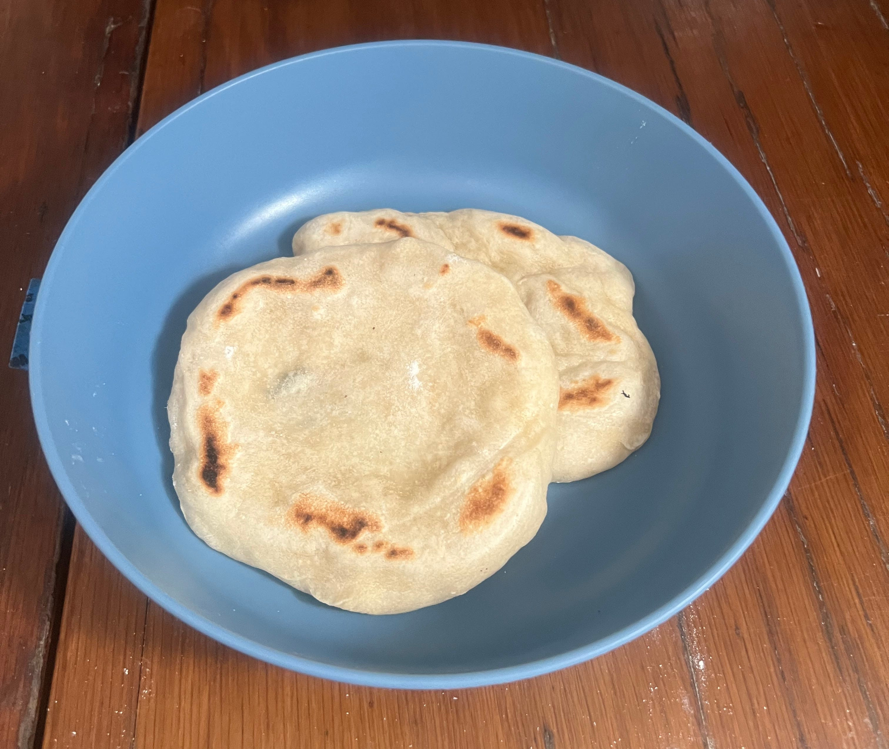

Indian Naan

Description
This is ridiculously good boat-made Indian naan that we make on our sailboat.
It's really easy to make from scratch, from simple ingredients.
Ingredients
- 1 1/2 cups all-purpose flour
- 1 tsp instant yeast
- 1/2 tsp salt
- 1/2 cup + 1 Tbsp warm water
- 1 1/2 tsp maple syrup
- Olive oil (for greasing bowl and frying)
- butter & cilantro for garnish
Steps
- Combine flour, yeast, salt, warm water, and maple syrup in a bowl - mix throughly
- Cover and let rise for 1 1/2 hours
- Divide and shape, then let rise for an additional 15-20 minutes
- Fry in pan over med-high heat for 1-2 minutes on each side
- Butter both sides and garnish with cilantro before serving
Home